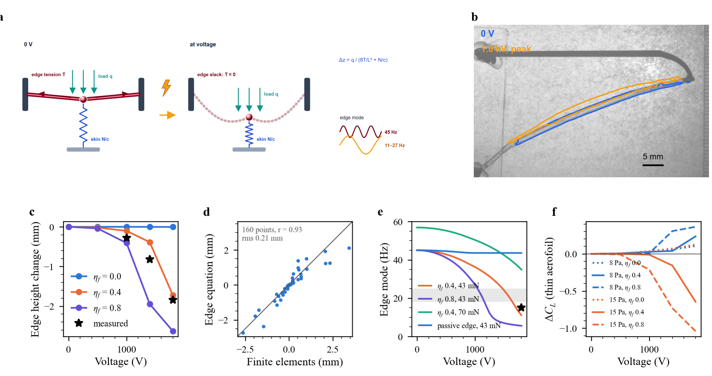
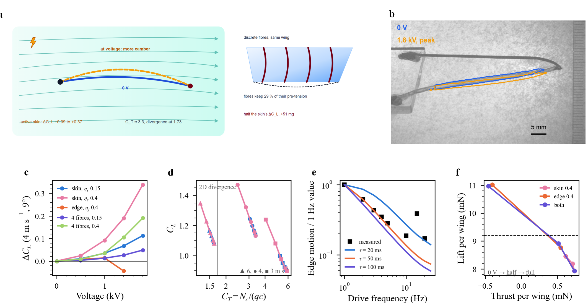
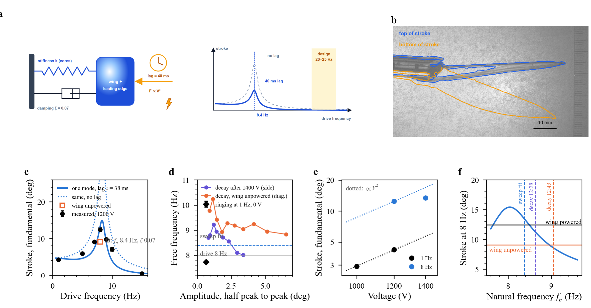
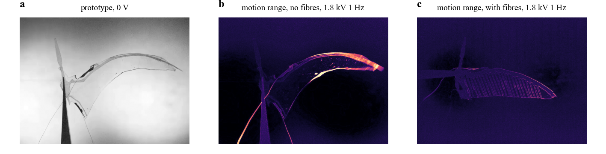
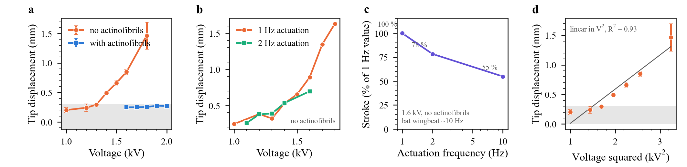

A flapping robot driven by rolled DEA cores, with a 50 mm wing whose skin and rolled trailing edge are DEAs. At this size one active layer can change the wing's tension by more than 20 % (scaling), so every placement is possible: whole skin, discrete strips and the attachment.
The edge is a tension switch

MeasuredModel
The rolled edge carries the wing's chordwise load. Voltage removes its tension, and the skin alone cannot hold the edge (Eq. 1).
c Only an active edge, $\eta_f$ 0.4–0.8, reproduces the measured drop (stars, 1.84 mm at 1.8 kV). A passive edge, $\eta_f = 0$, keeps $T = T_0$ and gives about zero (Eq. 1).
d The two-spring equation follows 160 finite-element runs: r 0.93, rms 0.21 mm (Eq. 1, three constants fitted).
e Voltage lowers $T$ and so the edge mode, from 45 Hz to 11–27 Hz; the 15 Hz bump on the bench fits a nearly slack edge (Eq. 2).
f The sign of the lift change follows the slope of the edge's shape under load (Eq. 3): $+0.2$ to $+0.4$ at 8 Pa, $-0.6$ to $-1.0$ at 15 Pa.
Flat, then steep, then saturating: at 0 V the string term $8T/L^2$ is about 13× the skin term $N/c$, and extra tension cut the motion about 13× (Eq. 1).
Skin, edge or fibres in air

ModelMeasured (e)
c Only about 15 % of the skin's Maxwell stress becomes a drop in chord tension (Eq. 4, $\eta_s$ 0.15), yet the skin alone changes $C_L$ by up to 0.34 at 1.8 kV.
d That is because the wing sits near membrane divergence, $C_T \approx 3.3$ against 1.73, where camber is most sensitive to tension (Eq. 5).
Four discrete fibres give about half: in series with a soft edge they keep only 29 % of their pre-tension (Eq. 6).
e Bench motion falls with frequency as a first-order force lag of about 50 ms (Eq. 7).
f Holding voltage raises lift and lowers thrust (unsteady vortex lattice, Eq. 10).
The robot flaps at resonance, with a lagging force

MeasuredModel fit
c 24.3 ± 1.0° peak to peak at 8 Hz and 1.2 kV. One mode with a force lag (Eq. 9): $f_n$ 8.38 Hz, $\zeta$ 0.07, $\tau$ 38 ± 13 ms. Without the lag the peak would be twice as high.
d, e The spring softens, $\gamma = -5.9$ rad$^{-2}$ (Eq. 8): 1.4 kV adds only 8 % at resonance, although the 1 Hz stroke grows as $V^2$.
The lag sits in the force, not the voltage: lagging the force fits the stroke's harmonics with one real asymmetry (misfit 0.3); lagging the voltage before squaring, as electrode RC would, cannot (misfit 388) (Eq. 8).
At 25 Hz a 38–50 ms lag passes only 13–17 % of a voltage change (Eq. 7), so on/off timing acts as half the voltage held. Timing within the stroke needs a faster force or a slower stroke: at 2 Hz, 85–90 % passes.
Powering the wing adds 5 ± 1 % (± 3 % camera scale) to the stroke, measured from the tip; the runs were 20 min apart, so drift could explain it.
First prototypes, July and October

Measured
All-DEA membrane, no flow. Brightness is the range of each pixel over the run (same scale in b and c).
b Without fibres, the free edges move most: the film expands in plane under the Maxwell pressure (Eq. 11) and the free edges have nothing to resist it.
c With fibres (another wing), the motion stays in the fibre lines: fibres raise the stiffness along them (Eq. 11).

Measured
a, d Without fibres the tip moves up to 1.5 mm at 1.8 kV, roughly linear in $V^2$ above about 1.3 kV ($R^2$ 0.93), as the Maxwell pressure (Eq. 11). Fibres hold it to the noise floor.
c 78 % of the 1 Hz stroke at 2 Hz and 55 % at 10 Hz. One first-order lag cannot fit both: 64 ms from the 2 Hz point, 24 ms from the 10 Hz point (Eq. 7).
Pixel-to-mm scale and the 2 and 10 Hz values were read from earlier plots; n = 1.
Next: two wings, three placements
Same robot, mirrored to two wings, same outline. Wings: (1) all-DEA skin, as now; (2) passive membrane tensioned by a DEA at its attachment (Eq. 6); (3) passive membrane, nothing powered, as the baseline. Forces in the wind tunnel with a Nano17 under the robot: voltage on, off, phase-locked to the stroke and sham, wind on and off.
The effect counts if it beats the scatter of paired cycles, $|\Delta L| > 3\,\sigma_{pair}/\sqrt{n}$ for $n$ paired cycles. Expected: $\Delta L = q S \Delta C_L \approx$ 1–3 mN per wing at 4 m/s for $\Delta C_L$ 0.1–0.3 (Eq. 5).
First test: the scatter of cycle-averaged lift with the robot flapping and the wing at 0 V.
Equations
1. Edge as a tension switch
$$\Delta z = \frac{q_e}{8T/L^2 + N/c},\qquad T = T_0 - \eta_f\, n_f\, \varepsilon\left(\frac{V}{H}\right)^{2} H\, w_a + T_{\mathrm{sag}}$$
The edge holds its load $q_e$ with two springs in parallel: the edge as a string ($8T/L^2$) and the skin strip behind it ($N/c$).
At 0 V the string is about 13× stiffer than the skin. Voltage removes $T$, the stiffness falls to the skin's: the motion jumps, then saturates once the edge is slack.
$\eta_f$: share of the Maxwell stress the roll turns into lost tension; $n_f$ active films, $w_a$ their width, $H$ film thickness, $T_{\mathrm{sag}}$ the tension the edge regains by sagging.
2. Edge mode
$$f_e = \frac{1}{2\pi}\sqrt{\frac{T\pi^2/L^2 + N/c}{\mu_e + \rho t c/3}}$$
Voltage lowers $T$, so it tunes the edge mode down: 45 Hz at 0 V to 11–27 Hz at 1.4–1.8 kV.
3. Lift change from the edge's shape (thin aerofoil)
$$\Delta C_L = 2\int_0^\pi z'(x)\,(\cos\theta-1)\,d\theta,\qquad x = \tfrac{c}{2}(1-\cos\theta)$$
Under light load the slack edge rises and camber grows; under heavier load the soft edge is blown back and camber falls. Same voltage, opposite sign.
The Maxwell pressure $\varepsilon E^2$ (about 70 kPa at 30 µm and 1.6 kV) times the layer thickness gives a tension per width; the soft edge takes up most of it, so only $\eta_s \approx$ 0.15 reaches the chord.
Camber falls as tension rises, and its sensitivity to a tension change grows as $1/T^2$: largest just above divergence ($C_T$ = 1.73 in 2D).
Too slack and the wing has no steady state: in flight, keep the edge above about 10 mN.
6. Series rule
$$\Delta T = \Delta F\,\frac{k_p}{k_a + k_p}$$
An actuator in series with a passive path passes on the share $k_p/(k_a+k_p)$ of its force change.
Discrete fibres hang on a soft edge (small $k_p$), so they lose most of their pull. An actuator at the attachment pulls on the stiff membrane path (large $k_p$) and keeps most of it.
7. First-order force lag
$$\tau\,\dot F + F = k\,V(t)^2,\qquad \frac{|F(f)|}{|F(0)|} = \frac{1}{\sqrt{1+(2\pi f\tau)^2}}$$
With $\tau$ = 38–50 ms: 85–90 % passes at 2 Hz, 37–46 % at 8 Hz, 13–17 % at 25 Hz.
$\gamma<0$: the spring softens with amplitude, so a stronger drive moves the resonance below the drive and the stroke saturates.
$\beta$: asymmetry of the spring. With the fixed $\sin^4$ drive, $X_2/X_1^2$ gives $\beta$ for each run without a drive signal; $\beta$ must come out real. It does only if the lag acts on $F$ (Eq. 7), not on $V$ before squaring.
9. Resonance with a force lag
$$\theta_1(f) = \frac{K}{\sqrt{(1-r^2)^2+(2\zeta r)^2}}\,\frac{1}{\sqrt{1+(2\pi f\tau)^2}},\qquad r = f/f_n$$
Fitted: $f_n$ 8.38 Hz, $\tau$ 38 ms, with $\zeta$ 0.07 from free decays.
In the model thrust turns positive near $St \approx 0.15$; the robot is at 0.05 at 4 m/s, so it needs 16–25 Hz. Holding voltage adds camber, which adds lift and drag.